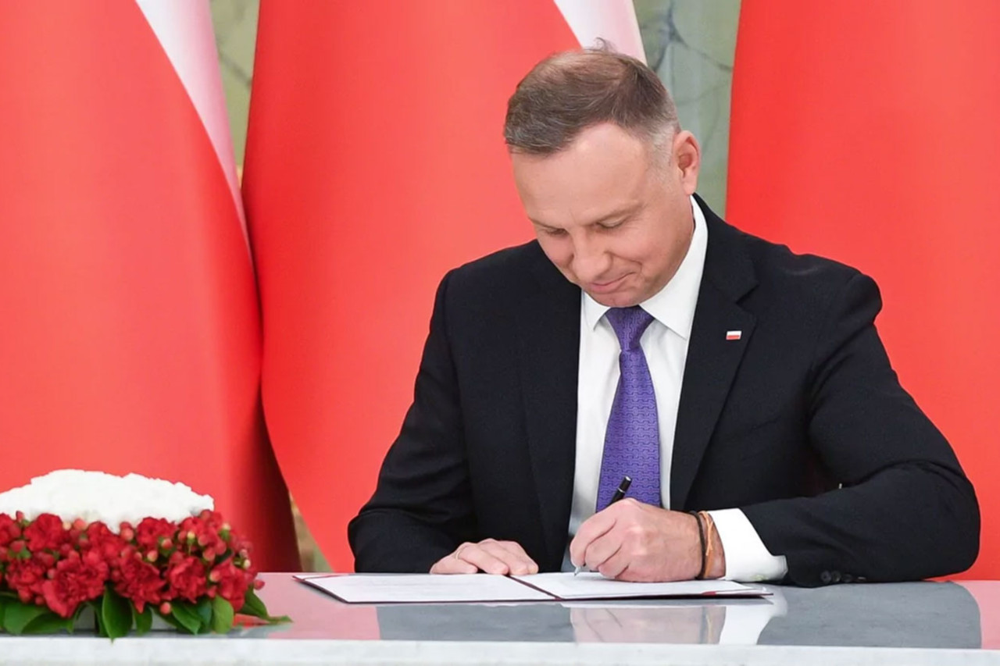

Які Зміни Очікують Українців Після 30 Червня 2024 Року У Польщі
З початком військового конфлікту в Україні Польща стала притулком для тисяч біженців, надаючи їм захист та підтримку. В умовах невизначеності та пошуку нового життя, легальне перебування в Польщі стає ключовою вимогою для забезпечення стабільності та безпеки. З огляду на це, уряд Польщі вніс пропозиції щодо змін у законодавство, спрямовані на полегшення умов перебування та інтеграції українських біженців.
На даний момент, у відповідь на поточну ситуацію, статус легального перебування громадян України в Польщі з PESEL UKR було продовжено до 30 червня. Це важливий крок, який надає українцям додатковий час для вирішення своїх нагальних потреб, але й акцентує на необхідності подальших дій для забезпечення тривалішої перспективи перебування.
Згідно з новим законопроєктом, з 1 липня 2024 року громадянам України, які зареєстровані з PESEL UKR, надається можливість продовжити своє легальне перебування у Польщі до кінця вересня 2025 року. Більше того, вони зможуть змінити свій статус з тимчасового захисту на дозвіл на Карту Побуду на три роки, відкриваючи нові перспективи для себе та своїх сімей.
Цей крок відображає розуміння урядом Польщі складності ситуації, з якою стикаються українські біженці, та їхню потребу в стабільності та безпеці. Заплановані зміни покликані не лише забезпечити легалізацію перебування, але й полегшити процес інтеграції в польське суспільство, відкриваючи шлях до роботи, освіти та соціальних послуг.
Щоб дізнатися більше про запропонований законопроект та детальніше ознайомитися з майбутніми змінами, які очікують на українських біженців в Польщі, читайте далі в нашій статті.
Які Зміни В Законодавстві Очікують На Українців?
У відповідь на виклики, з якими зіштовхнулися українські біженці у Польщі, уряд країни запропонував зміни в законодавстві, які значно полегшать процес легалізації їхнього перебування. Ці зміни мають на меті не лише продовжити легальне перебування українців у Польщі, а й надати їм можливість змінити свій статус на дозвіл на тимчасове проживання.
- Однією з ключових нововведень є спрощення процедури подання заяв на карту тимчасового побиту. Громадяни України, які мають активний статус UKR та внесені до бази даних PESEL, потенційно зможуть електронно подати заяву на отримання карти побиту. Це важливий крок у спрощенні бюрократичних процедур, що дозволяє уникнути необхідності особистого візиту до відповідних установ.
- Перевірка документів та заявників теж стане більш організованою. Агентство внутрішньої безпеки, Прикордонна служба та поліція перевірятимуть подані заяви, гарантуючи безпеку процесу. Успішне проходження перевірки дозволить отримати карту побиту на три роки, що стане важливим кроком до інтеграції українців у польське суспільство.
- Значна увага приділяється також возз'єднанню сімей, що є критично важливим для біженців. Передбачається, що громадяни України зможуть отримати дозвіл на тимчасове проживання з метою возз'єднання з родинами, що допоможе зберегти сімейні зв'язки та підтримати ментальне здоров'я.
- Зниження вікового порогу для неповнолітніх, введення обов'язку збору відбитків пальців та відмова від фінансування виготовлення фотографій є частиною більш широких зусиль з модернізації процесу реєстрації. Такі заходи призначені для оптимізації процедур та підвищення рівня безпеки.
- Нововведення також передбачають введення статусу CUKR для осіб, які отримали карту тимчасового побиту за спрощеною процедурою, що сприятиме кращій організації та контролю з боку урядових органів.
Зобов'язання інформувати роботодавців про отримання карти побиту, негайне подання заяви на отримання PESEL UKR після прибуття в Польщу та актуалізація даних в реєстрі є важливими кроками до забезпечення легального статусу та сприяння ефективній інтеграції українців в польське суспільство.
Ці зміни в законодавстві будуть відображати зусилля уряду Польщі допомогти українським біженцям знайти стабільність і безпеку в нових умовах, а також полегшити їх інтеграцію і адаптацію до життя в новій країні.

Зміни В Процесі Легалізації Після 30 Червня
В умовах триваючого конфлікту в Україні, багато українців шукають безпеки та захисту за кордоном, зокрема в Польщі. У відповідь на це, польський уряд вніс зміни до законодавства, спрямовані на полегшення процедур отримання карт тимчасового побиту, перевірки заявників та можливості возз'єднання сімей. Ці заходи є частиною ширшого спектру підтримки, який Польща надає українським біженцям.
Спрощення процедури отримання карт тимчасового побиту має критичне значення для українців, які шукають притулку в Польщі. Тепер, для подачі заяви необхідно лише заповнити електронну форму та відповідати певним критеріям, що значно скорочує час обробки заявок і усуває потребу в багаточисельних документах. Це не лише спрощує процес для заявників, але й допомагає польським установам ефективніше обробляти зростаючу кількість заяв.
Зміни у процедурі перевірки заявників також важливі для забезпечення безпеки та порядку в процесі надання тимчасового притулку. Завдяки введенню додаткових перевірок з боку Агентства внутрішньої безпеки, Прикордонної служби та поліції, забезпечується, що ті, хто отримує статус тимчасового захисту, відповідають всім необхідним критеріям. Ці заходи підтримують не лише безпеку країни, але й забезпечують, що допомога надається тим, хто її найбільше потребує.
- Відповідно до нових поправок до закону, починаючи з 1 липня 2024 року, припиняється виплата фінансової допомоги як компенсації за прийом українських біженців (відомої як 40+). Це рішення стосуватиметься господарів, які приймають до 10 осіб.
- Переглядаються умови співучасті в оплаті проживання та харчування у гуртожитках для українських біженців. Тепер, отримувачі допомоги 800+ на утримання дітей будуть вимушені покривати витрати на проживання за рахунок цих сум.
- З 1 липня 2024 року також скасовується видача одноразової грошової допомоги у розмірі 300 злотих українським біженцям.
Ці законодавчі ініціативи відображають зобов'язання Польщі надати захист і підтримку українським біженцям, одночасно забезпечуючи безпеку та порядок у власній країні. Вони показують глибоке розуміння потреб українців та готовність допомагати їм у ці важкі часи.
Інші Важливі Зміни
У відповідь на потреби українських біженців, уряд Польщі запровадив низку важливих змін, які охоплюють фінансову підтримку, освіту та працевлаштування. Зокрема, українським учням тепер доступні додаткові безкоштовні заняття з польської мови протягом збільшеного з 24 до 36 місяців періоду. Це рішення є важливим кроком у підтримці освітнього розвитку дітей, що сприятиме їхній кращій адаптації та інтеграції в польське суспільство.
Крім того, для громадян України, які прагнуть працевлаштуватися на посаду помічника вчителя, було скасовано вимогу документального підтвердження знання польської мови. Це значно спрощує процес отримання роботи в освітній сфері та допомагає використати професійний потенціал українців.
Важливою зміною є також відновлення можливості надання психологічних послуг українськими психологами, що мають відповідну освіту отриману в Україні. Така підтримка є критично важливою для біженців, котрі пережили травму та потребують кваліфікованої допомоги.
Нарешті, уряд Польщі продовжив до 30 вересня 2025 року дію польських віз та карт побиту для українців, а також дозволи на працевлаштування для медичних працівників. Ці заходи забезпечують українським біженцям стабільність та відкривають додаткові можливості для професійного розвитку в Польщі.
Загалом, ці зміни підкреслюють зобов'язання Польщі допомагати українським біженцям і сприяти їхній швидкій адаптації та інтеграції в новому середовищі, враховуючи їх освітні та професійні потреби.
Заключення
Пропоновані зміни в законодавстві, що стосуються умов перебування та інтеграції українських біженців в Польщі, є важливим кроком на шляху до поліпшення їхньої ситуації. Однак, це лише початок широкого процесу, що вимагає подальших обговорень та адаптацій. У квітні запланований круглий стіл, де зберуться представники МВС, адміністрації Польщі та громадських організацій, є ключовою подією, що дозволить зібрати пропозиції та зауваження, спрямовані на подальше вдосконалення законопроєкту.
Таке обговорення відкриває двері для внесення змін та доповнень, що можуть значно покращити якість життя українських біженців у Польщі, забезпечивши їм не лише правову підтримку, але й сприяння їхній соціальній адаптації та інтеграції в польське суспільство. Важливо, щоб усі сторони висловили свої погляди та пропозиції, адже кінцева мета цих зусиль — створення умов, за яких кожен біженець відчуватиме себе захищеним та впевненим у своєму майбутньому.
Очікується, що остаточні зміни до закону про тимчасовий захист українців вступлять в силу з 1 липня 2024 року, що є свідченням стрімкого прогресу та бажання Польщі підтримувати українське населення у цей складний час. Це не лише відображає солідарність із Україною, але й демонструє готовність до відкритого діалогу та співпраці з усіма зацікавленими сторонами для забезпечення ефективного вирішення проблем, з якими стикаються біженці.